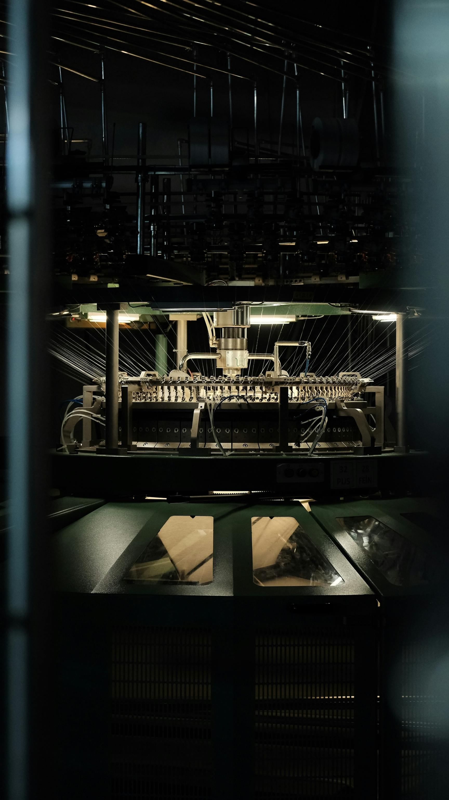
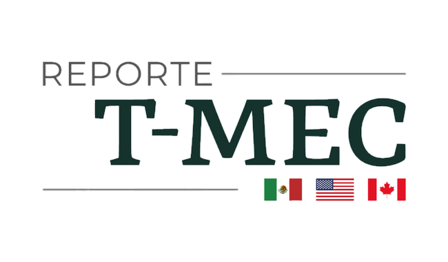

Volver a Soluciones
Política de calidad
Calidad y sustentabilidad en el mismo camino, con ingeniería de precisión.
Nuestro enfoque
En la industria textil tradicional, calidad y sustentabilidad solían ir por caminos separados. En ROMELL TEXTIL nacimos para unirlos.
Nuestra política se basa en la consistencia técnica de cada rollo de tejido circular que sale de nuestra planta en Puebla, diseñado bajo estándares internacionales para dar el rendimiento y la durabilidad que exige el mercado norteamericano.
Nuestros compromisos
- Control de variación: monitoreo estricto de estabilidad dimensional y solidez del color.
- Trazabilidad de origen: cada kilo de felpa o cardigán tiene una historia transparente y auditable.
- Optimización operativa: metodologías eficientes para un suministro confiable que protege tus costos.
Normas y certificados
Nuestras telas con certificado aportan trazabilidad documentada en el cumplimiento de requerimientos RSL, AATCC y ASTM para fibras de origen USMCA.

